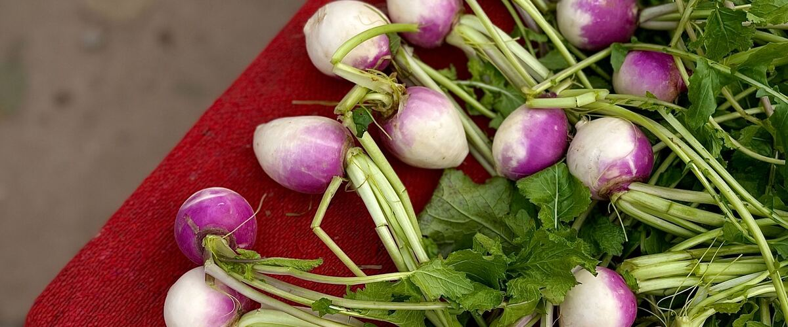

When to plant turnips in Winthrop and Twisp, WA
Plant turnips from seed, directly in the garden in Winthrop and Twisp, Apr 3 – May 15. For a fall harvest, plant again Jul 21 – Aug 4.
- Difficulty
- Easy
- Sun
- Full sun
- Spacing
- Thin to 4 inches apart
- Planting depth
- ½ inch deep
- Frost
- Handles light frost
- First harvest
- About 50 days after planting
Why these dates
Winthrop and Twisp's typical last spring frost is May 15. As a cool-season crop that handles light frost, this crop can go in about 6 weeks before that.
Inland Northwest. Higher, colder interior valleys. Cold springs and an earlier fall mean a shorter season; quick-maturing varieties pay off.
How to grow turnips in Winthrop and Twisp
- Prepare the bed: loosen the soil and mix in an inch or two of compost.
- Plant seeds Apr 3 – May 15, ½ inch deep, Thin to 4 inches apart.
- Keep the soil evenly moist until sprouts appear, which can take one to three weeks in cool soil.
- Plant again Jul 21 – Aug 4 for a fall harvest.
- Harvest: Pull at 2 to 3 inches across for tender roots. The greens are good to eat too.
Key numbers
- 50–85°FSoil to sprout
- 6.0–7.5Soil pH
- About 35–55Days to harvest
- Root maggotsBiggest risk
Top care tip: Water evenly and pull roots at 2 to 3 inches across, while they're still sweet and tender.
Growing notes
What makes the difference in Northwest gardens, in plain language.
Soil and sowing
Turnips grow best in loose, well-drained soil with a pH of about 6.0 to 7.5. Mix in some compost, but avoid heavy nitrogen, which grows leaves instead of roots. Sow seeds directly, keep the soil moist until they sprout, and thin early so each plant has room. Crowded turnips stay small and lopsided. Steady watering keeps roots sweet and smooth; dry soil makes them hot and woody.
Spring vs fall, and why fall is sweeter
Turnips are a cool-season crop. In spring, warm weather and long days can make roots tough and plants bolt, so sow as early as the soil allows and pick young. Fall crops, sown in mid to late summer, mature as the weather cools, and a light frost turns some of their starches to sugar. West of the Cascades, fall turnips often hold in the ground into early winter. East of the Cascades, harvest before the soil freezes hard. Hakurei is a quick, mild salad turnip, while Purple Top White Globe is the classic for cooking and storage.
Root maggots, harvest and storage
Cabbage root maggots tunnel into turnips in cool, wet soil, leaving brown trails. Row cover laid on at sowing keeps the egg-laying flies away, and rotating where you plant cabbage-family crops helps too. Pull roots at 2 to 3 inches across for the most tender texture. Twist off the greens, which are good cooked, and store roots in a bag in the fridge for several weeks. Larger fall turnips can keep for months in a cold, damp root cellar.
Common questions
When is the last frost in Winthrop and Twisp, WA?
Typically May 15. In 9 years out of 10, frost is over by June 1. These are 1991–2020 NOAA climate normals for Winthrop.
Is it too late to plant turnips in Winthrop and Twisp?
The spring planting window runs through May 15. If you miss it, plant again for fall from July 21 to August 4.
How long until I can harvest turnips?
About 50 days after planting. Pull at 2 to 3 inches across for tender roots. The greens are good to eat too.
Why are my turnips woody or bitter?
They were probably left in the ground too long, grew in hot weather, or dried out. Pick turnips small, about 2 to 3 inches across, and keep the soil moist. Fall crops are usually the sweetest.
Can you eat turnip greens?
Yes, turnip greens are tasty cooked like spinach or collards. Young greens are the most tender. Take a few leaves from each plant if you still want good roots.
When should I plant turnips for fall?
Sow in mid to late summer so roots mature in the cool fall weather. Keep the seedbed moist during the heat of August. Check your local calendar for exact dates.
Also plant in Winthrop and Twisp around the same time
Planting dates for turnips in nearby areas
- Wenatchee, WA Mar 20 – May 1
- Omak and Okanogan, WA Apr 1 – May 13
- Chelan, WA Mar 20 – May 1
- Leavenworth, WA Apr 1 – May 13
- Ellensburg, WA Apr 1 – May 13
- Spokane, WA Apr 1 – May 13
Full planting calendar for Winthrop and Twisp · Turnips in every city